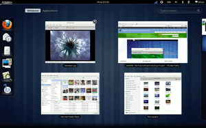
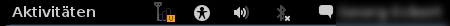
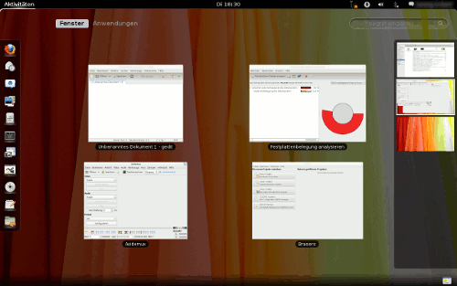
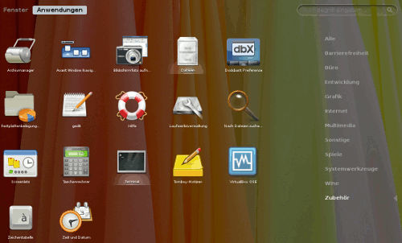
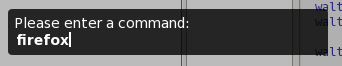
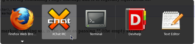
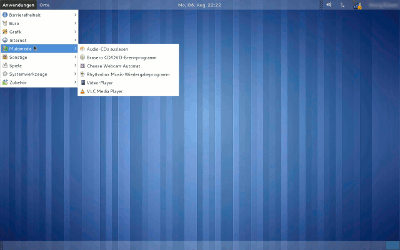
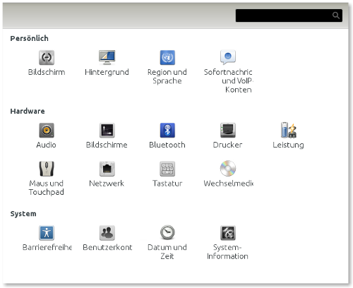

Gnome Shell Natty
Archivierte Anleitung
Dieser Artikel wurde archiviert, da er - oder Teile daraus - nur noch unter einer älteren Ubuntu-Version nutzbar ist. Diese Anleitung wird vom Wiki-Team weder auf Richtigkeit überprüft noch anderweitig gepflegt. Zusätzlich wurde der Artikel für weitere Änderungen gesperrt.
Anmerkung: Dieser Artikel behandelt die GNOME Shell unter Ubuntu 11.04
Achtung!
GNOME 3 und die GNOME Shell sind erst ab Ubuntu 11.10 in den offiziellen Ubuntu-Paketquellen enthalten. Bis dahin lassen sich beide nicht ohne einigen Aufwand und nur über eine Fremdquelle installieren.
Zum Verständnis dieses Artikels sind folgende Seiten hilfreich:
Die GNOME Shell  ist die nächste (dritte) Generation des GNOME Desktops. Sie definiert Interaktionen mit dem Desktop, wie Programme zu starten, Dokumente zu öffnen und vieles mehr, neu. Sie ersetzt ab GNOME 3.0 sowohl Funktionen des Fenstermanagers als auch das GNOME Panel. Für graphische Effekte kommt das neue OpenGL-basierte Clutter-Framework zum Einsatz.
ist die nächste (dritte) Generation des GNOME Desktops. Sie definiert Interaktionen mit dem Desktop, wie Programme zu starten, Dokumente zu öffnen und vieles mehr, neu. Sie ersetzt ab GNOME 3.0 sowohl Funktionen des Fenstermanagers als auch das GNOME Panel. Für graphische Effekte kommt das neue OpenGL-basierte Clutter-Framework zum Einsatz.

Vor der Installation¶
Vor der Installation sollte unbedingt ein Backup angelegt werden. Die Grafikkarte muss mit freien Treibern 3D-fähig sein. Proprietäre Treiber müssen vor der Installation deaktiviert werden: "System -> Systemverwaltung -> Hardware-Treiber". Die Verwendung proprietärer Grafiktreiber kann zu schweren Grafikfehlern führen und wird daher nicht empfohlen.
Installation¶
In Ubuntu 10.10 befindet sich ein entsprechendes Paket in den offiziellen Paketquellen. Darin wird allerdings nur eine veraltete Vorschau-Version der GNOME Shell bereitgestellt, die sich nicht zum produktiven Einsatz eignet. Dazu installiert man [1] folgendes Paket:
gnome-shell (universe)
 mit apturl
mit apturl
Paketliste zum Kopieren:
sudo apt-get install gnome-shell
sudo aptitude install gnome-shell
Ubuntu 11.04¶
Achtung!
Laut Betreuer der Paketquelle befindet sich diese noch in einem experimentellen Stadium und ist daher für den Produktiveinsatz ungeeignet. GNOME 2 und Unity werden durch die Installation unbrauchbar und eine Beschädigung des Systems kann nicht ausgeschlossen werden. Vor der Installation sollte unbedingt ein Backup gemacht werden! Um Unity oder GNOME 2 wieder herzustellen, muss man GNOME 3 vollständig entfernen.
Unter Ubuntu 11.04 lässt sich GNOME 3 inklusive GNOME Shell über eine Fremdquelle installieren. Dazu muss folgendes "Personal Package Archiv" (PPA) [2] verwendet werden:
Adresszeile zum Hinzufügen des PPAs:
ppa:gnome3-team/gnome3
Hinweis!
Zusätzliche Fremdquellen können das System gefährden.
Ein PPA unterstützt nicht zwangsläufig alle Ubuntu-Versionen. Weitere Informationen sind der  PPA-Beschreibung des Eigentümers/Teams gnome3-team zu entnehmen.
PPA-Beschreibung des Eigentümers/Teams gnome3-team zu entnehmen.
Damit Pakete aus dem PPA genutzt werden können, müssen die Paketquellen neu eingelesen werden.
Nach dem Aktualisieren der Paketquellen muss folgender Befehl [3] [4] ausgeführt werden:
sudo apt-get dist-upgrade
Nun installiert man [1] das Paket:
gnome-shell (ppa)
mit apturl
Paketliste zum Kopieren:
sudo apt-get install gnome-shell
sudo aptitude install gnome-shell
Zuletzt führt man folgende Befehle aus:
sudo apt-get remove gnome-accessibility-themes sudo apt-get install gnome-themes-standard
Anschließend muss das System neu gestartet werden. Bei der Anmeldung wählt man als Sitzung "GNOME" aus.
In einem Fenster ausprobieren¶
Um die GNOME Shell in einem eigenen Fenster zu starten (nur bis Ubuntu 10.10 sinnvoll), muss zusätzlich noch das Paket
xserver-xephyr
mit apturl
Paketliste zum Kopieren:
sudo apt-get install xserver-xephyr
sudo aptitude install xserver-xephyr
installiert werden.
Zum Starten dient der Befehl:
gnome-shell --xephyr --geometry=<x>x<y>
mit x und y als Größe des Fensters, z.B.:
gnome-shell --xephyr --geometry=1024x768
Deinstallation¶
Ubuntu 11.04¶
Die Installation von GNOME 3/GNOME Shell aus dem PPA zerstört Unity und den GNOME 2-Desktop. Um diese Arbeitsumgebungen wieder nutzen zu können, muss GNOME 3 und die GNOME Shell vollständig entfernt werden. Dies lässt sich mit dem Paketverwaltungs-Werkzeug PPA-Purge (mit dem Befehl ppa-purge) bewerkstelligen. Dazu geht man folgendermaßen vor:
sudo apt-get remove libgtk-3-common sudo apt-get install ppa-purge sudo ppa-purge ppa:gnome3-team/gnome3 sudo apt-get install gnome-panel sudo apt-get update sudo apt-get upgrade
Dadurch wird
das Paket libgtk-3-common deinstalliert
ppa-purge installiert
GNOME 3 vollständig samt seinem PPA entfernt und
das GNOME Panel reinstalliert
Möchte man Unity oder GNOME 2 wieder nutzen, so muss man vor einem Neustart zusätzlich die nachfolgenden Schritte ausführen.
Unity wieder herstellen¶
Um beim nächsten Systemstart wieder die grafische Benutzeroberfläche Unity verwenden zu können, muss folgendes Paket [1] installiert werden:
ubuntu-desktop (main)
mit apturl
Paketliste zum Kopieren:
sudo apt-get install ubuntu-desktop
sudo aptitude install ubuntu-desktop
GNOME 2 wieder herstellen¶
Um beim nächsten Systemstart wieder die grafische Benutzeroberfläche GNOME 2 verwenden zu können, muss folgendes Paket [1] installiert werden:
gnome-desktop-environment (universe)
mit apturl
Paketliste zum Kopieren:
sudo apt-get install gnome-desktop-environment
sudo aptitude install gnome-desktop-environment
Bedienung¶
Die Bedienung der GNOME Shell gestaltet sich recht übersichtlich. Es gibt 2 Modi: den Normalmodus und den Übersichtsmodus.
Panel¶
In der Normalansicht wird am oberen Bildschirmrand einer Arbeitsfläche ein Panel angezeigt. Darauf finden sich:
Links: der "Aktivitäten"-Button und der Name des aktuell im Fokus liegenden Fensters
Mittig: der aktuelle Tag und die aktuelle Uhrzeit (ein Klick öffnet einen Kalender)
Rechts: der Benachrichtigungsbereich (Tray) und das Benutzermenü, welches den Namen des aktuell angemeldeten Benutzers trägt

Das Benutzermenü enthält folgende Befehle:
"Benutzerinformationen" - dort lassen sich Angaben über den Benutzer ändern
"Systemeinstellungen" - öffnet das Kontrollzentrum
"Bildschirm sperren"
"Benutzer wechseln" - kurzzeitig mit einer anderen Benutzerkennung arbeiten
"Abmelden" - Benutzer abmelden
"Bereitschaft" - Sitzung in den Ruhezustand versetzen bzw. an selber Stelle wenn Alt gedrückt wird: Ausschalten
Übersichtsmodus¶

Die Übersicht kann durch einen Druck auf die System-Taste (mit dem Windows-Logo), durch eine Bewegung des Mauszeigers in die linke obere Ecke oder durch einen Klick auf "Aktivitäten" geöffnet werden. Dadurch werden alle vorhandenen Arbeitsflächen neben- und untereinander dargestellt. Außerdem werden dabei alle Fenster gleichmäßig auf ihren jeweiligen Arbeitsflächen dargestellt.
Durch einen Klick auf eines der Fenster wechselt man wieder auf die entsprechende Arbeitsfläche und das angeklickte Fenster erhält den Fokus.
Neue Arbeitsflächen können durch Verschieben von Fenstern auf andere Arbeitsflächen hinzugefügt werden. Wird das letzte Fenster auf einer Arbeitsfläche geschlossen, so verschwindet diese wieder.
Links neben der Übersicht der Arbeitsflächen wird eine Seitenleiste angezeigt, die folgende Bereiche enthält:
Suchbegriff eingeben ...¶
Über das Eingabefeld lassen sich Anwendungen suchen. Die Ergebnisse werden sofort unterhalb des Eingabefeldes angezeigt, von wo aus die entsprechenden Anwendungen angeklickt oder auf eine Arbeitsfläche gezogen werden können. Dadurch wird die Anwendung gestartet.
Anwendungen¶

Hier findet man die Symbole der favorisierten Anwendungen. Zu Beginn sind das nur 4: Evolution, Empathy, Shotwell und der Dateimanager. Außerdem werden in diesem Bereich auch Symbole der aktuell geöffneten Programme angezeigt. Diese werden durch blau unterlegte Namen hervorgehoben.
Durch einen Rechtsklick ( ) auf das Symbol einer Anwendung öffnet sich ein Kontextmenü, um die Anwendung aus den Favoriten zu entfernen. Das Kontextmenü einer geöffneten Anwendung enthält eine Auflistung aller Fenster dieser Anwendung. Zusätzlich ist es möglich, die Anwendung in die Favoriten aufzunehmen bzw. daraus zu entfernen und ein neues Fenster dieser Anwendung zu öffnen.
) auf das Symbol einer Anwendung öffnet sich ein Kontextmenü, um die Anwendung aus den Favoriten zu entfernen. Das Kontextmenü einer geöffneten Anwendung enthält eine Auflistung aller Fenster dieser Anwendung. Zusätzlich ist es möglich, die Anwendung in die Favoriten aufzunehmen bzw. daraus zu entfernen und ein neues Fenster dieser Anwendung zu öffnen.
Favoriten können durch anklicken oder ziehen auf eine Arbeitsfläche gestartet werden.
Ein Klick auf "Anwendungen" öffnet das Anwendungsmenü. Auf der rechten Seite werden Kategorien angezeigt.
Alt+F2¶
Auch bei der GNOME Shell öffnet sich durch Alt + F2 wie gewohnt eine Eingabezeile für Befehle an das System.

Alt+Tab, Alt+^¶
Mit Alt + Tab ⇆ kann zwischen geöffneten Anwendungen gewechselt werden. Dabei werden die Anwendungen aller Arbeitsflächen angezeigt. Die Anwendungen einer anderen als der aktiven Arbeitsfläche werden durch einen senkrechten Trennstrich separiert. Auch werden die Fenster der gleichen Anwendung gruppiert. Um die Fenster innerhalb einer Gruppe zu wechseln, betätigt man einfach Alt + ^ .

Wechsel zwischen Arbeitsflächen¶
Mit Strg + Alt + ↑ sowie Strg + Alt + ↓ wechselt man zwischen den momentan vorhandenen Arbeitsflächen. Die aktuelle Anwendung wird durch Strg + Alt + ⇧ + ↑ bzw. Strg + Alt + ⇧ + ↓ auf die vorherige / nächste Arbeitsfläche verschoben. Im rechten Bereich des Übersichtmodus kann per Maus zwischen den Arbeitsflächen gewechselt werden. Ebenso kann dort die aktive Anwendung jeder Arbeitsfläche auf eine andere Arbeitsfläche verschoben werden.
Ausweichmodus (Klassischer Desktop)¶

Um die GNOME Shell zu verwenden, wird eine 3D-fähige Grafikkarte benötigt. Um GNOME 3 ohne 3D-fähige Grafikkarte zu verwenden, steht der "Ausweichmodus" zur Verfügung. Dieser orientiert sich äußerlich stark an der Oberfläche von GNOME 2. Um den Ausweichmodus verwenden zu können muss unter Ubuntu 11.04, zuerst folgendes Paket installiert [1] werden:
gnome-session-fallback (ppa)
mit apturl
Paketliste zum Kopieren:
sudo apt-get install gnome-session-fallback
sudo aptitude install gnome-session-fallback
Ab Ubuntu 11.10 beinhaltet die Gnome-Shell den Ausweichmodus bereits. Unter "Systemeinstellungen" kann man nun einstellen, dass der Ausweichmodus bei der Anmeldung automatisch verwendet wird.
Konfiguration¶
Zur Konfiguration des GNOME 3 Desktops und der GNOME Shell stehen mehrere grafische Werkzeuge zur Verfügung. GNOME 3 ist noch relativ jung. Daher werden einige dieser Werkzeuge ihren Funktionsumfang vermutlich noch deutlich ausweiten.
Systemeinstellungen¶
Über das Menü in der oberen, linken Bildschirmecke "(Benutzername) -> Systemeinstellungen" lässt sich folgender Dialog öffnen.

Konfigurationseditor¶
Dieser grafische Einstellungseditor lässt sich über das Tastenkürzel
Alt +
F2 und die Eingabe von gconf-editor aufrufen.
Gnome Tweak Tool¶
Dieses Konfigurationswerkzeug ist nur über das oben genannte PPA erhältlich und lässt sich durch folgendes Paket [1] installieren:
gnome-tweak-tool (ppa)
mit apturl
Paketliste zum Kopieren:
sudo apt-get install gnome-tweak-tool
sudo aptitude install gnome-tweak-tool
Das Werkzeug lässt sich über "Anwendungen -> Erweiterte Einstellungen / gnome-tweak-tool" aufrufen und kann genutzt werden, um z.B. das Gtk- oder Symbol-Thema zu ändern oder alle Fenster-Bedienelemente anzeigen zu lassen (Minimieren, Maximieren, Schließen).
Suchmaschinen hinzufügen¶
Neben der Suche über Google und Wikipedia lassen sich leicht andere Suchmaschinen hinzufügen, zum Beispiel Scroogle , welche eine SSL-gesicherte und anonymisierte Suchabfrage bietet.
Hierzu muss lediglich im Verzeichnis /usr/share/gnome-shell/search_providers eine entsprechende .xml Datei erstellt werden, wobei die vorhandenen Dateien hierfür als Vorlage dienen können.
Als Beispiel der Inhalt für die Scroogle Suche:
<OpenSearchDescription xmlns="http://a9.com/-/spec/opensearch/1.1/">
<ShortName>Scroogle</ShortName>
<Description>Scroogle Suche</Description>
<InputEncoding>UTF-8</InputEncoding>
<Image width="16" height="16">data:image/x-icon;base64</Image>
<Url type="text/html" method="GET" template="https://ssl.scroogle.org/cgi-bin/nbbwssl.cgi?Gw={searchTerms}"/>
</OpenSearchDescription>Den obigen Inhalt als scroogle.xml mit Root-Rechten [4] im Verzeichnis /usr/share/gnome-shell/search_providers speichern, nach einem Neustart der Shell mittels Alt + F2 und der Eingabe von r steht die neue Suchabfrage zur Verfügung.
Desktop¶
Möchte man den GNOME 3 Desktop wie unter GNOME 2 verwenden (Ordner und Dateien ablegen, Laufwerke anzeigen lassen, Kontextmenü), so lässt sich dies mit dem Gnome Tweak Tool einstellen: "Filemanager -> Have Filemanager handle the Desktop".
Bekannte Probleme¶
Erzwungener Ausweichmodus¶
Lässt sich GNOME 3 nicht mehr starten, weil man unter "Systemeinstellungen -> Systeminformation -> Grafik -> Ausweichmodus erzwingen" aktiviert hat, geht man folgendermaßen vor:
Bei der Anmeldung die Sitzung "Recovery-Modus" auswählen
den Befehl
gnome-shellstartendie Einstellung über "Systemeinstellungen -> Systeminformation -> Grafik" deaktivieren
Strg + Alt + Entf (Neustart)
Bei der Anmeldung die Sitzung "GNOME" auswählen
Compiz und Emerald¶
Die Verwendung von Compiz Fusion mit der GNOME Shell führt zu einem Absturz der grafischen Oberfläche. Anders sieht es im Ausweichmodus aus. Dort können diese Programme (Compiz und Emerald) in Verbindung mit dem Paket fusion-icon verwendet werden um Desktopeffekte zu erhalten.
Automatische Anmeldung¶
Aktiviert man das automatische Anmelden, so wird standardmäßig der Unity Desktop geladen, möchte man dies zur GNOME Shell ändern, so gelingt dass mit folgendem Befehl:
sudo /usr/lib/lightdm/lightdm-set-defaults -s gnome-shell
Möchte man wieder den Unity Desktop als Standard aktivieren so geht dies mit:
sudo /usr/lib/lightdm/lightdm-set-defaults -s ubuntu
- Erstellt mit Inyoka
-
 2004 – 2017 ubuntuusers.de • Einige Rechte vorbehalten
2004 – 2017 ubuntuusers.de • Einige Rechte vorbehalten
Lizenz • Kontakt • Datenschutz • Impressum • Serverstatus -
Serverhousing gespendet von